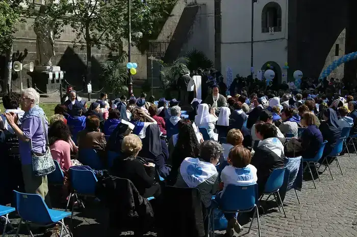

The concept
Émile Durkheim introduced the term in The Elementary Forms of Religious Life (1912), describing the heightened emotional state produced when people assemble for a ritual. In his account, the experience is real and its object is the group itself: the participants feel a power, and the power is the collective.
Maps, diagrams and images



Durkheim's argument was that this is how beliefs become sacred — not because the object is divine, but because the assembly generates an intensity that gets attributed to the object.
What modern research finds
The concept has measurable correlates: synchronous movement and chanting raise pain thresholds and social bonding, mediated by endorphins; shared attention and arousal increase felt solidarity and conformity. The effects are real and are studied in labs as well as at festivals.
Documented: assembly and synchrony produce measurable arousal, bonding and altered pain thresholds.
Documented: the effect strengthens group identity and conformity.
Not mystical: nothing in the findings requires a force beyond physiology and social psychology.
Durkheim's larger claim: that this is the origin of religious feeling — an interpretation, not a measurement.
Why it is in the archive: because it explains how a crowd can make a claim feel true, which is a recurring mechanism in the pages here.
Why it is here
Because the archive documents claims that spread, and this is the oldest and best-studied account of the social mechanism that makes them stick: not argument, but assembly.
Open resources on this topic
- PapersOpen-access articles: DOAJ · PubMed Central · Internet Archive Scholar
- BooksPublic-domain and borrowable copies: Open Library · Project Gutenberg · Google Books · Internet Archive
Cite this page
Momin, S. (2026). Collective Effervescence. The Larger World Archive. https://drsamonline.github.io/LARGE_GLOBE/collective-effervescence.htmlMomin, Sohil. “Collective Effervescence.” The Larger World Archive, 2026, https://drsamonline.github.io/LARGE_GLOBE/collective-effervescence.html.Momin, Sohil. “Collective Effervescence.” The Larger World Archive, 2026. https://drsamonline.github.io/LARGE_GLOBE/collective-effervescence.html.@misc{collective2026collective,
author = {Momin, Sohil},
title = {Collective Effervescence},
year = {2026},
howpublished = {The Larger World Archive},
url = {https://drsamonline.github.io/LARGE_GLOBE/collective-effervescence.html},
note = {Last reviewed 20 November 2026}
}Last reviewed 20 November 2026 · Corrections policy · this page is not peer reviewed
Sources for this page
- Wikipedia, “Collective effervescence” — the concept and its useen.wikipedia.org
- Wikipedia, “Émile Durkheim” — the sociologist and the argumenten.wikipedia.org
- Wikipedia, “The Elementary Forms of Religious Life” — the booken.wikipedia.org
- Wikipedia, “Entrainment (biomusicology)” — the synchrony researchen.wikipedia.org